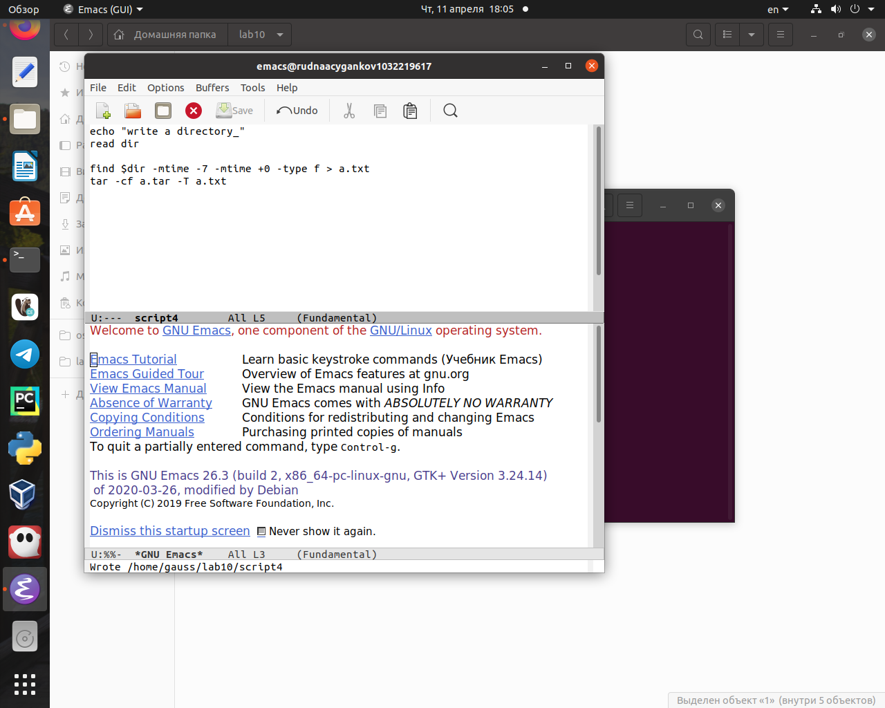
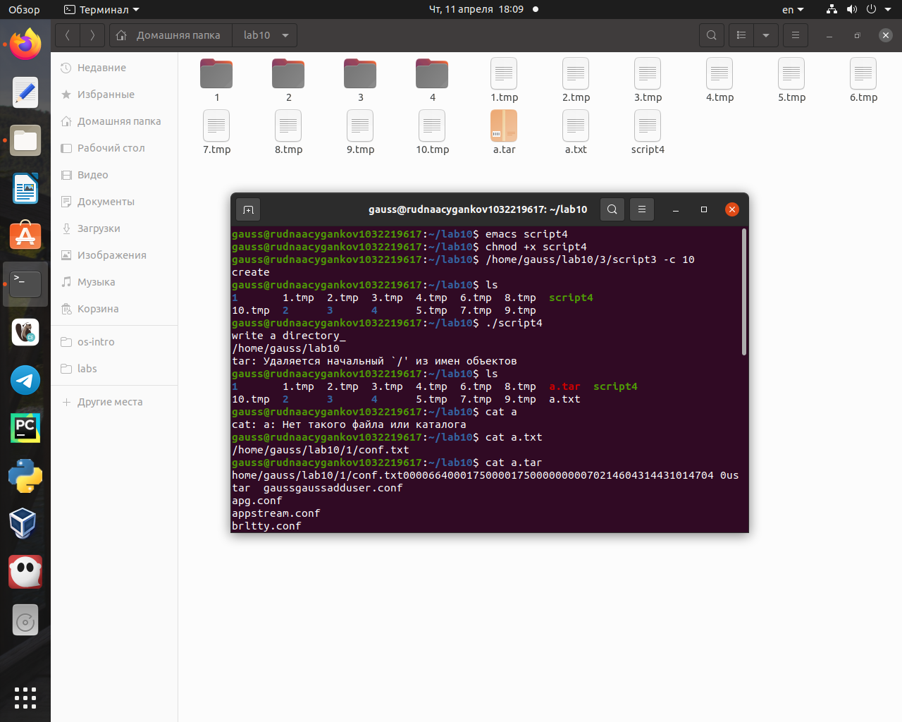

создание более сложных программ позволит решать более сложные задачи.
Объект и предмет исследования
Командный процессор ОС UNIX
Цели и задачи
Изучить основы программирования в оболочке ОС UNIX. Научится писать более сложные командные файлы с использованием логических управляющих конструкций и циклов.
Выполнение заданий.
Используя команды getopts grep, написать командный файл, который анализирует командную строку с ключами:
- -iinputfile — прочитать данные из указанного файла;
- -ooutputfile — вывести данные в указанный файл;
- -pшаблон — указать шаблон для поиска;
- -C — различать большие и малые буквы;
- -n — выдавать номера строк. а затем ищет в указанном файле нужные строки, определяемые ключом -p. (рис. @fig:001, @fig:002)
script1результат
Написать на языке Си программу, которая вводит число и определяет, является ли оно больше нуля, меньше нуля или равно нулю. Затем программа завершается с помощью функции exit(n), передавая информацию в о коде завершения в оболочку. Командный файл должен вызывать эту программу и, проанализировав с помощью команды $?, выдать сообщение о том, какое число было введено (рис. @fig:003, @fig:004, @fig:005).
Сиscript2Результат
Написать командный файл, создающий указанное число файлов, пронумерованных последовательно от 1 до N (например 1.tmp, 2.tmp, 3.tmp,4.tmp и т.д.). Число файлов, которые необходимо создать, передаётся в аргументы командной строки. Этот же командный файл должен уметь удалять все созданные им файлы (если они существуют) (рис. @fig:006, @fig:007).
script3Результат
Написать командный файл, который с помощью команды tar запаковывает в архив все файлы в указанной директории. Модифицировать его так, чтобы запаковывались только те файлы, которые были изменены менее недели тому назад (использовать команду find) (рис. @fig:008, @fig:009).
script4
Результат
Результаты
Вывод:
В процессе выполнения данной лабораторной работы я изучил основы программирования в оболочке ОС UNIX. Научился применять ветвление и циклы в написании скриптов.